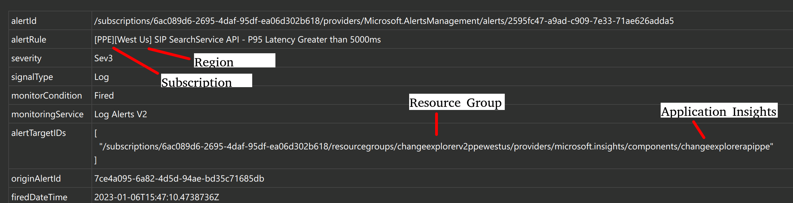
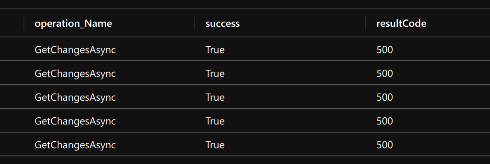
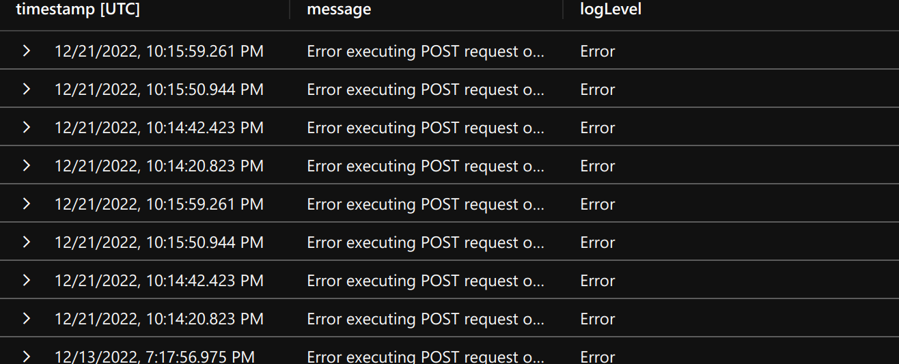

Incident Information Provider API: 5xx ResultCode
Investigation & Mitigation Steps
Tip
For understanding what we mean by "5xx resultcode", see the wiki page 5xx server errors.
Tip
Most of the required access information below can be retrieved directly from the ticket; see the picture below: 
A 5xx result code has been returned for either of the following IIP APIs (<OPERATION_NAME>):
GetIncidentInformationAsync
Investigate the error and mitigate if possible by executing the following steps:
Warning
If this is not a one-off error (i.e. all requests are failing with 5xx errors) escalate immediately to the FCM manager. This would be considered an outage, not an availability dip.
- Get JIT access for the relevant subscription (use the auto-cut ticket as request evidence).
- PPE: 6ac089d6-2695-4daf-95df-ea06d302b618
- PROD: 8830ba56-a476-4d01-b6ac-d3ee790383dc
- Log into your appropriate
ame.gblaccount on the Azure Portal. - Go to the related Application Insights.
- Execute the following query to get a list of API requests in descending duration for the past hour (note that you must modify the
<OPERATION_NAME>,<ENVIRONMENT>and<REGION>fields in the query below.)
requests
| project
timestamp,
id,
operation_Name,
success,
resultCode,
duration,
operation_Id,
cloud_RoleName,
invocationId=customDimensions['InvocationId']
| where timestamp > ago(1h)
| where cloud_RoleName =~ 'IncidentInformationProvider-<ENVIRONMENT>-<REGION>' and operation_Name =~ '<OPERATION_NAME>'
| where resultCode startswith "5"

- For every query that is returned, take note of the
operation_Id. Join it with thetracesandexceptionstable to get the logs for that particular query:
requests
| project
timestamp,
id,
operation_Name,
success,
resultCode,
duration,
operation_Id,
cloud_RoleName,
invocationId=customDimensions['InvocationId']
| where timestamp > ago(30d)
| where cloud_RoleName =~ 'IncidentInformationProvider-<ENVIRONMENT>-<REGION>' and operation_Name =~ 'GetServiceChangeCountsAsync'
| order by timestamp desc
| where resultCode startswith "5"
| project operation_Id, invocationId
| join kind = leftouter traces on $left.operation_Id == $right.operation_Id
| join kind = leftouter exceptions on $left.operation_Id == $right.operation_Id
| extend invocationKeyFromTraces = tostring(customDimensions["InvocationId"])
| where invocationId == invocationKeyFromTraces
| project
timestamp,
message = iff(message != '', message, iff(innermostMessage != '', innermostMessage, customDimensions.['prop__{OriginalFormat}'])),
logLevel = customDimensions.['LogLevel']
| where logLevel == "Error"
Results in:

- You will now have the logs. Take a look at the error message to under the issue. For example, you might get something like:
Error executing POST request onv1/changes/{*id}endpoint with id: 3956131. Exception Semantic error: Relop semantic error: SEM0023: The total size of the arguments exceeded the allowed limit of 53 MBwhich would help in identifying the issue. Remember to write down your analysis on the ticket so that future oncall engineers can use your findings to resolve issues quickly.
Note
It is important to take a look at these errors to improve availability of our system. Do no disregard this type of ticket.
Common/Known Issues
Use this section to add common/known issues. Additionally, use this section to share learnings with other engineers on how you investigated and resolved a ticket. Utilize the following format
### <ICM TICKET ID>: <SOME THOUGHTFUL DESCRIPTION>
to add a new sub-section.